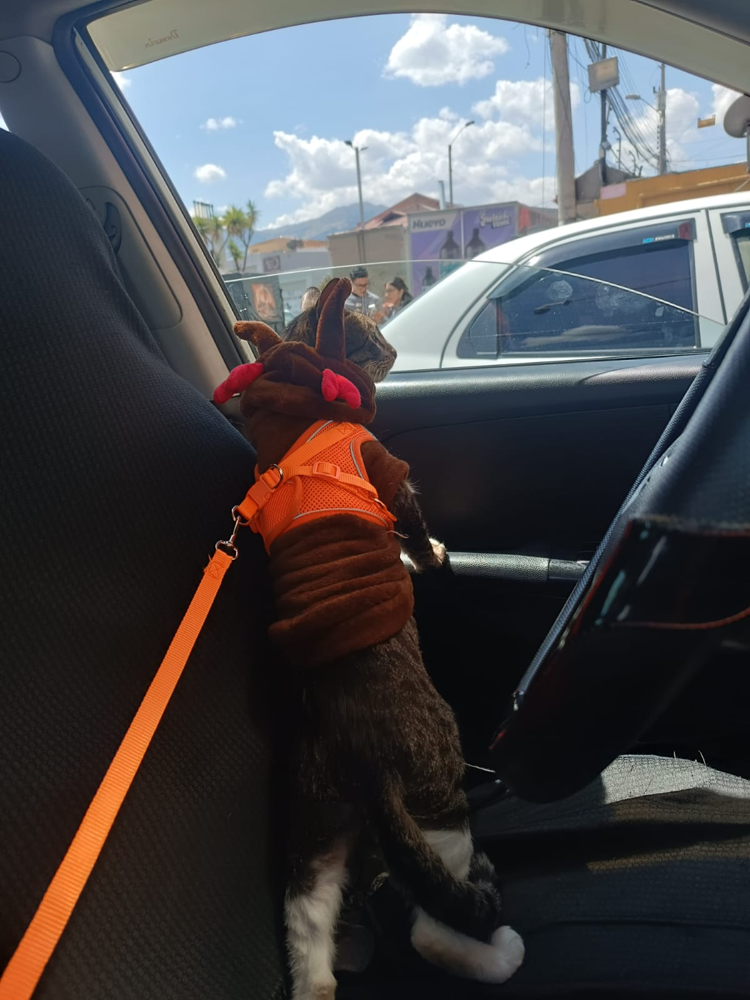
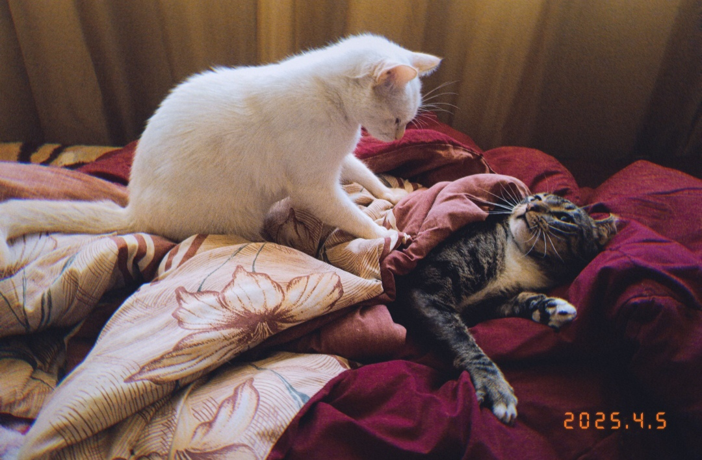

"El señor Magnus", es la frase que utilizamos en casa para referirnos a nuestro gatito. Un gatito de aproximadamente 6 años de edad, pesa aproximadamente 5kg, aveces más, a veces menos. A continuación, te indico algunas de sus características:
- Gatito macho
- Ojos verdes
- Atigrado (gris con negro y blanco).
- En sus patitas delanteras tiene tipo guantecitos blancos.
- En sus patitas traseras es como si tuviese botitas blancas.
- Tiene todo su pechito blanco, empezando desde el mentón, continuando al cuello, a su pancita y sus patitas traseras.
A continuación, podrás ver al Srñ. Magnus en diferentes situaciones:
-
Magnus decidido a no irse hasta recibir una carnita
-
Magnus listo para navidad, es un ayudante de Papá Noel

-
Magnus siendo atacado por Clarita (su compañera de juegos), mientras dormía

Mira más fotos del Sr. Magnus con su hermanita Clara
Volver al inicio